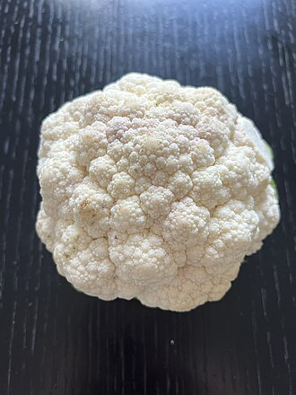

カリフラワーの生産量 都道府県ランキング
全18都道府県の順位と収穫量
カリフラワーの収穫量が全国で最も多いのは茨城県で、2,430 tです。全国（1万9,400 t）の13%を占めます。

| 順位 | 都道府県 | 収穫量 | 全国に占める割合 |
|---|---|---|---|
| 1位 | 茨城県 | 2,430 t | 13% |
| 2位 | 長野県 | 2,190 t | 11% |
| 3位 | 熊本県 | 2,040 t | 11% |
| 4位 | 埼玉県 | 1,750 t | 9.0% |
| 5位 | 愛知県 | 1,720 t | 8.9% |
| 6位 | 徳島県 | 1,700 t | 8.8% |
| 7位 | 新潟県 | 1,110 t | 5.7% |
| 8位 | 福岡県 | 657 t | 3.4% |
| 9位 | 神奈川県 | 636 t | 3.3% |
| 10位 | 東京都 | 468 t | 2.4% |
| 11位 | 群馬県 | 450 t | 2.3% |
| 12位 | 千葉県 | 426 t | 2.2% |
| 13位 | 静岡県 | 423 t | 2.2% |
| 14位 | 秋田県 | 248 t | 1.3% |
| 15位 | 福島県 | 203 t | 1.0% |
| 16位 | 大阪府 | 194 t | 1.0% |
| 17位 | 山形県 | 178 t | 0.9% |
| 18位 | 岡山県 | 99 t | 0.5% |
カリフラワーの生産量の推移（令和2年産〜令和6年産）
全国の収穫量は、令和2年産の2万1,000 tから令和6年産の1万9,400 tへ、8%減りました。1位は入れ替わっています（令和2年産は茨城県、令和3年産は熊本県、令和4年産は茨城県、令和5年産は熊本県、令和6年産は茨城県）。
| 年 | 全国 | 1位 | 2位 | 3位 |
|---|---|---|---|---|
| 令和6年産 | 1万9,400 t | 茨城県2,430 t | 長野県2,190 t | 熊本県2,040 t |
| 令和5年産 | 2万2,100 t | 熊本県2,860 t | 茨城県2,590 t | 愛知県2,430 t |
| 令和4年産 | 2万2,200 t | 茨城県2,660 t | 熊本県2,560 t | 愛知県2,340 t |
| 令和3年産 | 2万1,600 t | 熊本県2,530 t | 茨城県2,520 t | 愛知県2,240 t |
| 令和2年産 | 2万1,000 t | 茨城県2,540 t | 熊本県2,390 t | 愛知県1,990 t |
この数字について
- 分類：アブラナ科
- 全国の収穫量：1万9,400 t
- この数字が表すもの：収穫量（収穫された重量）
- 調査：作物統計調査 作況調査（野菜） 令和6年産
- 18県分を調査（調査していない県は順位に入りません）
カリフラワーの生産量について、よくある質問
- カリフラワーの生産量が日本一の都道府県はどこですか？
- 茨城県です。作物統計調査 作況調査（野菜）（令和6年産）で2,430 tでした。
- カリフラワーの生産量ランキング2位・3位はどこですか？
- 2位は長野県（2,190 t）、3位は熊本県（2,040 t）です。
- カリフラワーの生産量ランキング4位・5位はどこですか？
- 4位は埼玉県（1,750 t）、5位は愛知県（1,720 t）です。カリフラワーの全18県の順位は上の表のとおりです。
- カリフラワーの全国の生産量はどれくらいですか？
- 1万9,400 t（令和6年産）です。